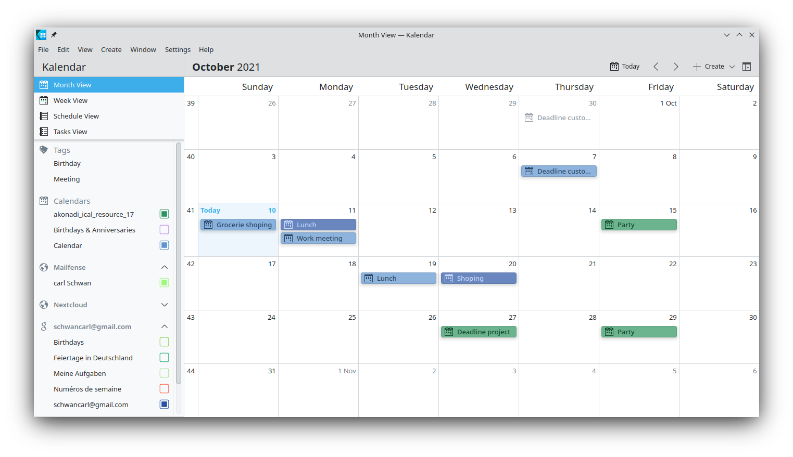
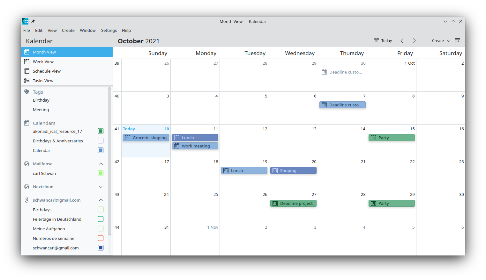

Synchronizace s aplikací KDE Kontact
KOrganizer, Kalendar a KAddressBook mohou synchronizovat váš kalendář, kontakty a úkoly s Nextcloud serverem.
Toho je možné dosáhnout následováním těchto kroků podle toho, zda používáte KOrganizer nebo Kalendar:
V KOrganizer:
Otevřete KOrganizer a v seznamu kalendářů (vlevo dole) klikněte pravým tlačítkem a zvolte
Přidat kalendář:
Z výsledného seznamu prostředků vyberte
DAV groupware prostředek:
V Kalendar:
Otevřete Kalendar a v liště nabídek otevřete nastavení a pak zvolte
Zdroje kalendáře->Přidat kalendář:

Z výsledného seznamu prostředků vyberte
DAV groupware prostředek:
V KOrganizer a Kalendar:
Zadejte své uživatelské jméno. Jako heslo, je třeba vytvořit heslo pro konkrétní aplikaci / token (Více viz):

Jako volbu serveru softwaru na podporu spolupráce zvolte
Nextcloud:

Zadejte URL svého Nextcloud serveru a (pokud je třeba) popis umístění jeho instalace (vše co se nachází za prvním /, například
mujnextcloudvhttps://example.com/mumnextcloud). Pak klikněte na Další:

Nyní můžete spojení vyzkoušet, což pro úvodní spojení může chvíli trvat. Pokud to nefunguje, je možné se vrátit zpět a zkusit to napravit změnou nastavení:


Zvolte název pro tento prostředek, například
PráceneboDoma. Ve výchozím stavu jsou synchronizovány jak CalDAV (kalendář) tak CardDAV (kontakty):

Poznámka
Pro prostředky kalendáře a kontaktů je možné ručně nastavit četnost obnovování. Ve výchozím stavu je toto nastaveno na 5 minut a mělo by být v pořádku pro většinu použití. Když vytvoříte novou schůzku, je ihned synchronizována na Nextcloud. Toto můžete chtít změnit pro úsporu energie v akumulátoru nebo tarifu mobilních dat, takže můžete položku aktualizovat kliknutím pravým tlačítkem na ni v seznamu kalendářů.
Po pár sekundách až minutách (v závislosti na rychlosti vašeho připojení k Internetu) naleznete své kalendáře a kontakty v KDE Kontact aplikacích KOrganizer, Kalendar a KAddressBook, stejně jako v Plasma miniaplikaci kalendář:

 
